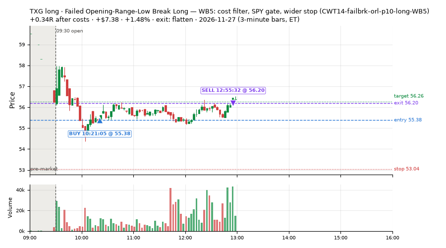
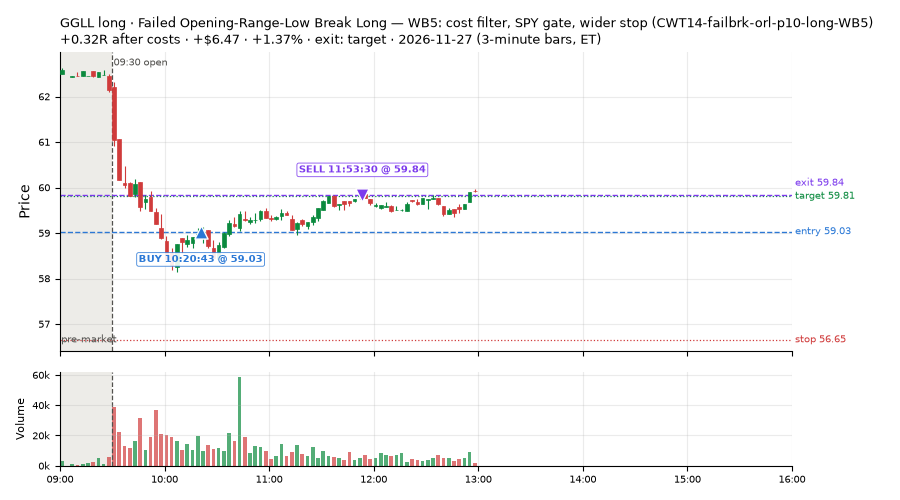
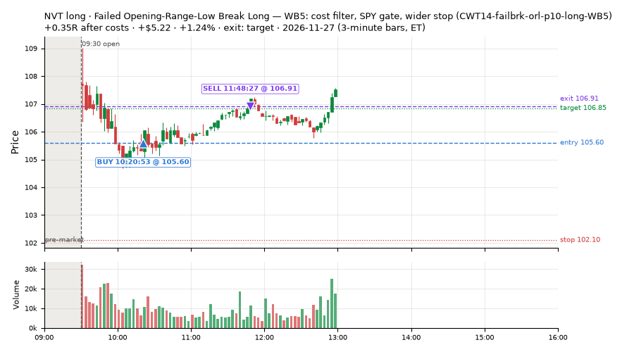
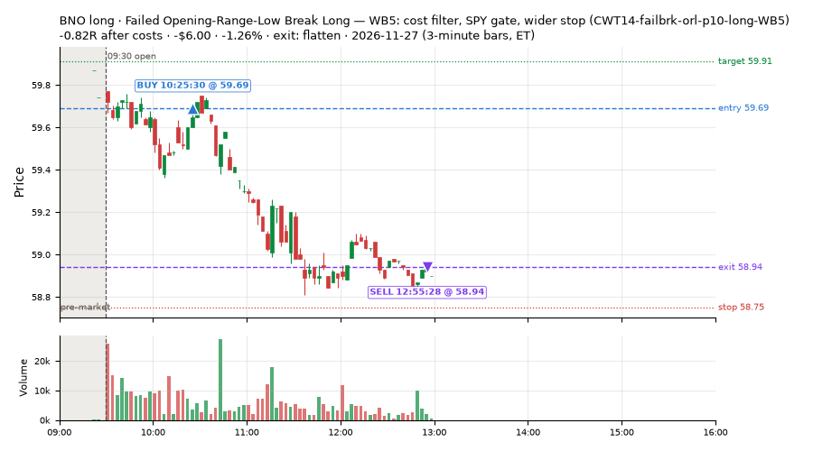
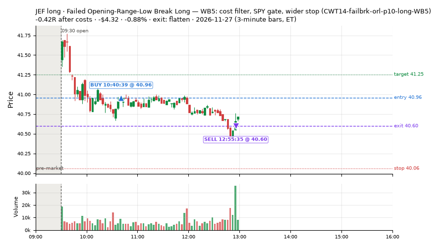
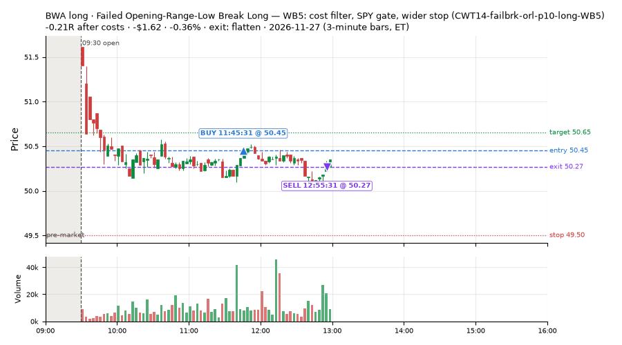
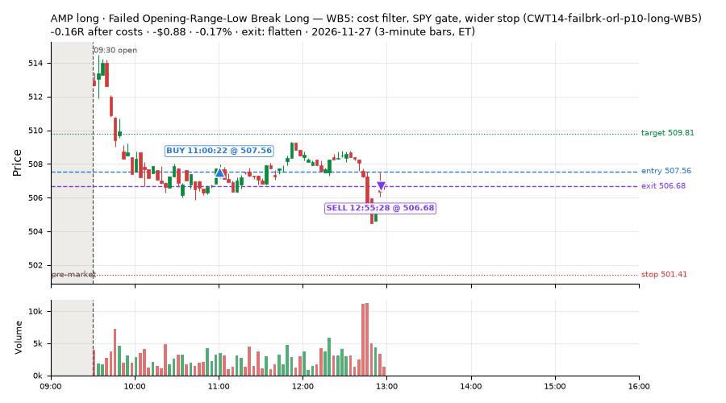
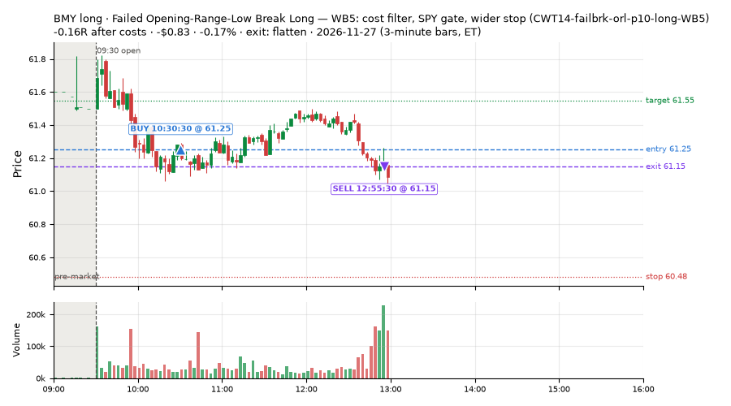

29 trades · win rate 79% · P/L $65.76
PROBATION: no live setup has passed both locked test periods. 10 owner-directed setups added 2026-10-08 (MarcoFlow top 5 + 5 new), untested live. RW6G1 (RW6 + VWAP band guard) added 2026-10-09, probation.

| Symbol | Setup | Side | In | Out | Entry | Exit | Exit reason | % gained | P/L |
|---|---|---|---|---|---|---|---|---|---|
| TXG | Failed Opening-Range-Low Break Long — WB5: cost filter, SPY gate, wider stop (CWT14-failbrk-orl-p10-long-WB5) | long | 10:21 | 12:55 | 55.38 | 56.20 | flatten | +1.48% | $7.38 |
| GGLL | Failed Opening-Range-Low Break Long — WB5: cost filter, SPY gate, wider stop (CWT14-failbrk-orl-p10-long-WB5) | long | 10:20 | 11:53 | 59.03 | 59.84 | target | +1.37% | $6.47 |
| NVT | Failed Opening-Range-Low Break Long — WB5: cost filter, SPY gate, wider stop (CWT14-failbrk-orl-p10-long-WB5) | long | 10:20 | 11:48 | 105.60 | 106.91 | target | +1.24% | $5.22 |
| Symbol | Setup | Side | In | Out | Entry | Exit | Exit reason | % lost | P/L |
|---|---|---|---|---|---|---|---|---|---|
| BNO | CWT14-failbrk-orl-p10-long-WB5 | long | 10:25 | 12:55 | 59.69 | 58.94 | flatten | -1.26% | $-6.00 |
| JEF | CWT14-failbrk-orl-p10-long-WB5 | long | 10:40 | 12:55 | 40.96 | 40.60 | flatten | -0.88% | $-4.32 |
| BWA | CWT14-failbrk-orl-p10-long-WB5 | long | 11:45 | 12:55 | 50.45 | 50.27 | flatten | -0.36% | $-1.62 |
| AMP | CWT14-failbrk-orl-p10-long-WB5 | long | 11:00 | 12:55 | 507.56 | 506.68 | flatten | -0.17% | $-0.88 |
| BMY | CWT14-failbrk-orl-p10-long-WB5 | long | 10:30 | 12:55 | 61.25 | 61.15 | flatten | -0.17% | $-0.83 |








Signal to fill: median 2s, 90th percentile 3s (29 trades). Bars close each minute; the order follows the bar close.
Best excursion (MFE): median 0.27R; worst (MAE) median 0.23R. 38% of trades never got +0.25R in our favour; 0 reached +1R and still closed at or below 0.
| Symbol | Setup | Best R | Worst R | Closed R |
|---|---|---|---|---|
| BNO | CWT14-failbrk-orl-p10-long-WB5 | +0.06 | -0.94 | -0.82 |
| BMY | CWT14-failbrk-orl-p10-long-WB5 | +0.32 | -0.24 | -0.16 |
| JEF | CWT14-failbrk-orl-p10-long-WB5 | +0.04 | -0.60 | -0.42 |
| AMP | CWT14-failbrk-orl-p10-long-WB5 | +0.28 | -0.50 | -0.16 |
| BWA | CWT14-failbrk-orl-p10-long-WB5 | +0.07 | -0.43 | -0.21 |
| Entry time | Trades | Win | Avg R | P/L |
|---|---|---|---|---|
| 09:50-10:30 | 18 | 94% | +0.18 | $50.84 |
| 10:30-11:30 | 8 | 50% | +0.03 | $10.66 |
| 11:30-13:00 | 3 | 67% | +0.10 | $4.26 |
| Setup | Trades | Win | Avg R after costs | Adj R (net of SPY) | Avg R ex-market (all sessions) | P/L |
|---|---|---|---|---|---|---|
| Failed Opening-Range-Low Break Long — WB5: cost filter, SPY gate, wider stop (CWT14-failbrk-orl-p10-long-WB5) | 27.0 | 78% | +0.12 | -0.08 | +0.04 (beta +0.30, n 148) | $59.88 |
| Generated: Lunch Selling-Flush Buy (extended) (GEN-261027-10-FlowShiftlem1p2-MACDhge0p079-SMA20dge0p59-LUNCH-BRopgt0p65-holdtr-long) | 2.0 | 100% | +0.25 | +0.30 | -0.12 (beta +0.74, n 147) | $5.88 |
Market direction (SPY, beta 1) accounted for $55.32 of today's $65.76; the rest ($10.44) came from the setups themselves. Avg R net of SPY: -0.05 (incl. a hedge leg's cost; report only).
22 setups live today. Today: 49 signals, 29 taken, 0 lost because another setup held the symbol (0%). Since 2026-11-12 (11 sessions): 2555 signals, 1107 taken, 24 lost to other setups (1%). Peak open positions today 19 of 400 slots. Earnings blackout removed 138 symbols before scanning.
Simulated playing time (not live): 1446 what-if trades of signals not taken, avg +0.20R, 62% winners; of them 24 lost to another setup (avg -0.33R).
Silent: NM-RWN4-ns2-spyup05-notfri-short, CWT04-backside-vwaptest-a25-short, LD4-st4-breadthup-t1s05-long, GEN-261023-01-VWAPxUp-VWAPatrge0p33-LAM-SPYgt0p5-t05s05-short, GEN-261028-03-EMAdChgge0p15-VWAPxUp-Since950ATRlem0p43-LUNCH-SPYgt0p25-hold-long, ULT-HV2-shock-snap-etf-long-K, GEN-261028-05-EMAdChgge0p093-ORLdistlem0p42-LAM-QQQgt0p6-holdtr-long, GEN-261022-07-Z12lem1p9-FlowShiftlem0p96-ATRdge3p6-AM-BRopgt0p5-t1s1-short, GEN-261027-03-NewLOD-DayPosle0p19-SMA20dlem0p59-LAM-SPYgt0p5-hold-long
| Prio | Setup | Today sig / taken | Sessions | Signals / taken / trades | Taken/day | Expected/day | Lost to other setups | Lost to (setup n) | Top skip reasons | SIMULATED: not-taken n / avg R / win | Verdict |
|---|---|---|---|---|---|---|---|---|---|---|---|
| 1 | Gap-Down Pop Fade (all day) — WB4: WB3 + SPY exit 0.40% RW5-heat30-flowsell-rsi5pop-gapdn-short-FD-WB4 | 0 / 0 | 8 | 43 / 26 / 26 | 3.25 | – | 0 | – | spread / quote / size 16, not shortable / shorts off 1 | 17 / -0.13R / 47% | ok 16.2 entries/week |
| 2 | Gap-Down Bounce Short, Heavy Selling — WB3: RSI 55-60 + 1R >= 0.40% + to 13:00 + SPY-since-09:50 gate RW1-gapdn-bounce-flowsell-short-FD-WB3 | 0 / 0 | 8 | 110 / 68 / 68 | 8.50 | – | 0 | – | spread / quote / size 26, other 13, not shortable / shorts off 3 | 42 / -0.18R / 40% | ok 42.5 entries/week |
| 3 | Generated: Late Pullback Buy (MACD rising) — WB5: 14:00-14:30, $100M ADV, breadth gate GEN-261027-01-MACDhge0p12-Ret15mATRlem0p069-LATE-BRvwgt0p5-t05s1-long-WB5 | 0 / 0 | 8 | 6 / 4 / 4 | 0.50 | – | 0 | – | spread / quote / size 1, other 1 | 2 / +0.42R / 100% | slow 2.5 entries/week; ~24 weeks to 60 trades |
| 4 | NS2 Short, SPY Up 0.5%, Not Friday (near-miss) NM-RWN4-ns2-spyup05-notfri-short | 0 / 0 | 5 | 0 / 0 / 0 | 0.00 | – | 0 | – | – | 0 / – | silent no signals in 5 session(s); no expected rate on file |
| 5 | Generated: Open Range-Expansion Short GEN-261029-09-RangeExpge1p6-Since950ATRlem0p43-OPEN-BRvwgt0p5-hold-short | 2 / 0 | 5 | 2 / 0 / 0 | 0.00 | – | 0 | – | spread / quote / size 2 | 2 / -1.13R / 0% | slow no entries yet |
| 6 | Monday Weak-RS NS3 Short (near-miss) NM-RWN5-ns3-mon-weakrs-short | 0 / 0 | 11 | 76 / 45 / 45 | 4.09 | – | 1 | IDX2-spy075-0945-3x-trail 1 | spread / quote / size 21, not shortable / shorts off 5, other 4 | 31 / -0.19R / 39% | ok 20.5 entries/week |
| 7 | Generated: Lunch Selling-Flush Buy (extended) GEN-261027-10-FlowShiftlem1p2-MACDhge0p079-SMA20dge0p59-LUNCH-BRopgt0p65-holdtr-long | 4 / 2 | 5 | 455 / 147 / 147 | 29.40 | – | 4 | NM-RWR1-exh150-gapdn-spyup-pm-short 3, RW5-heat30-flowsell-rsi5pop-gapdn-short-FD-WB4 1 | other 240, spread / quote / size 64, symbol held by another setup 4 | 308 / +1.13R / 89% | ok 147.0 entries/week |
| 8 | Backside VWAP-Test Short (big runner) CWT04-backside-vwaptest-a25-short | 0 / 0 | 6 | 0 / 0 / 0 | 0.00 | – | 0 | – | – | 0 / – | silent no signals in 6 session(s); no expected rate on file |
| 9 | Index Dip Bounce 2 3x S&P IDX2-spy075-0945-3x-trail | 0 / 0 | 11 | 2 / 2 / 2 | 0.18 | – | 0 | – | – | 0 / – | slow 0.9 entries/week; ~66 weeks to 60 trades |
| 10 | * Oversold EMA Cross-Down with Breadth Turning Up (near-miss) LD4-st4-breadthup-t1s05-long | 0 / 0 | 11 | 0 / 0 / 0 | 0.00 | – | 0 | – | – | 0 / – | silent no signals in 11 session(s); no expected rate on file |
| 11 | Generated: Late-AM VWAP Pop Short (SPY up) GEN-261023-01-VWAPxUp-VWAPatrge0p33-LAM-SPYgt0p5-t05s05-short | 0 / 0 | 4 | 0 / 0 / 0 | 0.00 | – | 0 | – | – | 0 / – | silent no signals in 4 session(s); no expected rate on file |
| 12 | Generated: Open RSI Pop Reversal Short GEN-261029-10-RSIslopege19-Ret5mlem0p21-EMAdiffge0p29-OPEN-BRvwgt0p5-t1s1-short | 0 / 0 | 4 | 1 / 0 / 0 | 0.00 | – | 0 | – | spread / quote / size 1 | 1 / -1.14R / 0% | slow no entries yet |
| 13 | Generated: Lunch VWAP Reclaim Buy GEN-261028-03-EMAdChgge0p15-VWAPxUp-Since950ATRlem0p43-LUNCH-SPYgt0p25-hold-long | 0 / 0 | 4 | 0 / 0 / 0 | 0.00 | – | 0 | – | – | 0 / – | silent no signals in 4 session(s); no expected rate on file |
| 14 | Generated: Midday Oversold Short (quiet day) GEN-261028-06-RSI5le13-VWAPatrlem0p15-DayRngVsPrevle0p34-MID-BRoplt0p35-hold-short | 0 / 0 | 4 | 1 / 1 / 1 | 0.25 | – | 0 | – | – | 0 / – | slow 1.2 entries/week; ~48 weeks to 60 trades |
| 15 | Generated: PM Runner Fade (SPY down) GEN-261019-09-EMAdChgge0p15-Since950ATRge0p6-PM-SPYltm0p5-t05s1-short | 0 / 0 | 9 | 53 / 8 / 8 | 0.89 | – | 0 | – | not shortable / shorts off 39, other 4, spread / quote / size 1 | 44 / +0.01R / 66% | slow 4.4 entries/week; ~14 weeks to 60 trades |
| 16 | Panic Flush Reversal (deep, 5x volume) CWT05-flush-m075-v5-long | 0 / 0 | 11 | 6 / 4 / 4 | 0.36 | – | 0 | – | spread / quote / size 1, broker rejected 1 | 2 / +0.41R / 100% | slow 1.8 entries/week; ~33 weeks to 60 trades |
| 17 | Generated: Lunch New-Low Short (selling) GEN-261026-03-NewLOD-Flow3lem0p37-FromOpenATRlem0p78-LUNCH-BRopgt0p5-holdtr-short | 0 / 0 | 11 | 11 / 6 / 6 | 0.55 | – | 0 | – | not shortable / shorts off 4, other 1 | 5 / +0.24R / 40% | slow 2.7 entries/week; ~22 weeks to 60 trades |
| 18 | Generated: Late Quiet-Day Short (QQQ down) GEN-261029-06-EMAdChgge0p092-DayRngVsPrevle0p61-LATE-QQQltm0p3-t1s1-short | 0 / 0 | 9 | 654 / 210 / 210 | 23.33 | – | 4 | CWT14-failbrk-orl-p10-long-WB5 2, CWT14-failbrk-pdl-p10-lowvol-long 1, GEN-261026-02-VolRatioge2-SMA20dlem0p58-BarsSinceLODle1-LATE-BRoplt0p35-t1s1-long 1 | other 139, not shortable / shorts off 120, per-setup cap 100 | 444 / +0.18R / 68% | ok 116.7 entries/week |
| 19 | Afternoon VWAP Reclaim Fade NS4-pm-vwap-reclaim-oversold-short | 1 / 0 | 11 | 57 / 19 / 19 | 1.73 | 3.05 | 0 | – | other 20, spread / quote / size 15, not shortable / shorts off 3 | 38 / +0.21R / 58% | slow 8.6 entries/week; ~7 weeks to 60 trades |
| 20 | Failed Opening-Range-Low Break Long — WB5: cost filter, SPY gate, wider stop CWT14-failbrk-orl-p10-long-WB5 | 42 / 27 | 8 | 210 / 148 / 148 | 18.50 | – | 1 | NM-RWN5-ns3-mon-weakrs-short 1 | spread / quote / size 60, symbol held by another setup 1, broker rejected 1 | 62 / +0.08R / 74% | ok 92.5 entries/week |
| 21 | Late-Day ETF Dip Buy, High-Dispersion Days ETFDISP-late-dip-hidisp-long | 0 / 0 | 5 | 11 / 9 / 9 | 1.80 | – | 0 | – | spread / quote / size 2 | 2 / +0.06R / 50% | slow 9.0 entries/week; ~7 weeks to 60 trades |
| 22 | ETF One-Bar Shock Snap-Back ULT-HV2-shock-snap-etf-long-K | 0 / 0 | 5 | 0 / 0 / 0 | 0.00 | – | 0 | – | – | 0 / – | silent no signals in 5 session(s); no expected rate on file |
Every trade is attached as a CSV you can open and edit in Excel or Google Sheets. Live page: https://misiti15.github.io/MCF/live/